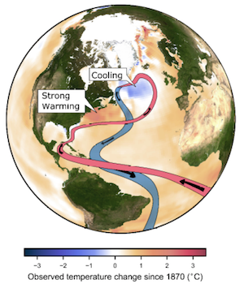

Every second, billions of litres of warm water flow northward near the surface of the Atlantic, while the same amount of cold water in the deeper ocean flows back southward. In this way, an amount of heat equivalent to the energy production of a million nuclear power plants is brought into the North Atlantic. Since much of this heat is released into the atmosphere, it has a significant impact on Europe's climate. The circulation behind all this is called the Atlantic Meridional Overturning Circulation, or short AMOC. Climate models predict a weakening of the AMOC in response to global warming, and scientist have wondered for years whether this slowdown has already begun. One of these scientists is Dr Levke Caesar.
As a climate physicists Dr Caesar studies climatic changes in and around the North Atlantic with a special focus on the role and the past evolution of the Atlantic Meridional Overturning Circulation. Since direct continuous measurements of the AMOC only started in 2004, she looks at other climate variables, that can be linked to the strength of the AMOC, to learn more about its past. One example are the sea surface temperatures of the North Atlantic: they are highly affected by the northward heat transport associated with AMOC and reach back until the end of the 19th Century. And indeed, a unique region of cooling temperatures south of Greenland suggests that the system has weakened by about 15 percent since the middle of the 20th century (Caesar et al., 2018). This is in line with the trends found in other proxy data like the grain sizes or the composition of coral shells found in ocean sediments, that all indicate that the AMOC in recent decades has been weaker than ever before in at least 1600 years (Caesar et al., 2021).
These findings are particularly interesting for Ireland - not just because it profits from the heat brought northward by the AMOC but also because a such a slowdown of the AMOC has been linked to an enhanced sea-level rise at both sides of the North Atlantic as well as increased storminess in north-western Europe.
Simplified scheme of the Atlantic Meridional Overturning Circulation and the fingerprint in the sea surface temperatures that is caused by a slowdown in AMOC strength.
Caesar, L., McCarthy, G. D., Thornalley, D. J. R., Cahill, N., & Rahmstorf, S. (2021). Current Atlantic Meridional Overturning Circulation weakest in last millennium. Nature Geoscience, 14(3), 118-120. https://doi.org/10.1038/s41561-021-00699-z
Caesar, L., Rahmstorf, S., Robinson, A., Feulner, G., & Saba, V. (2018). Observed fingerprint of a weakening Atlantic Ocean overturning circulation. Nature, 556(7700), 191-196. https://doi.org/10.1038/s41586-018-0006-5